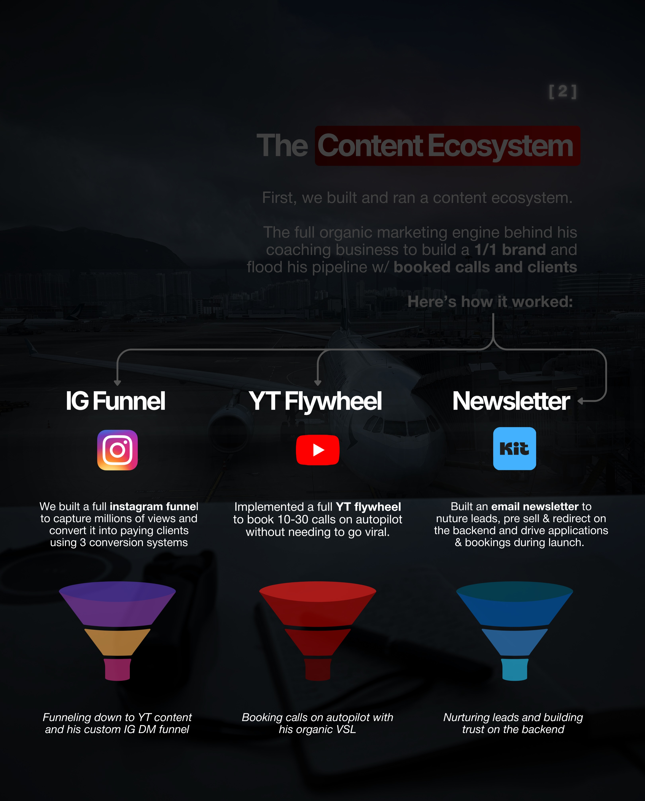
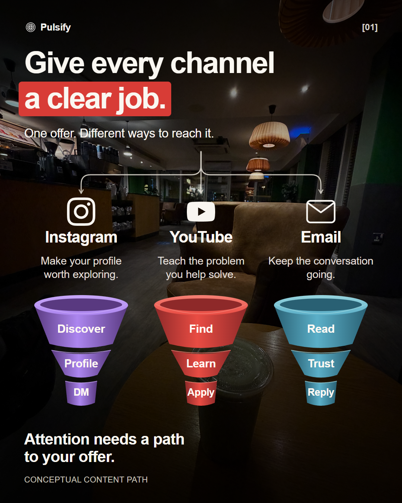

K1-4 structure adapted with our real cafe photo, fresh copy, vector funnel bands and channel routes. This is a creative trial, not a performance claim. Arial approximates the reference typography.


Editable HTML · Editable vector elements · Construction record